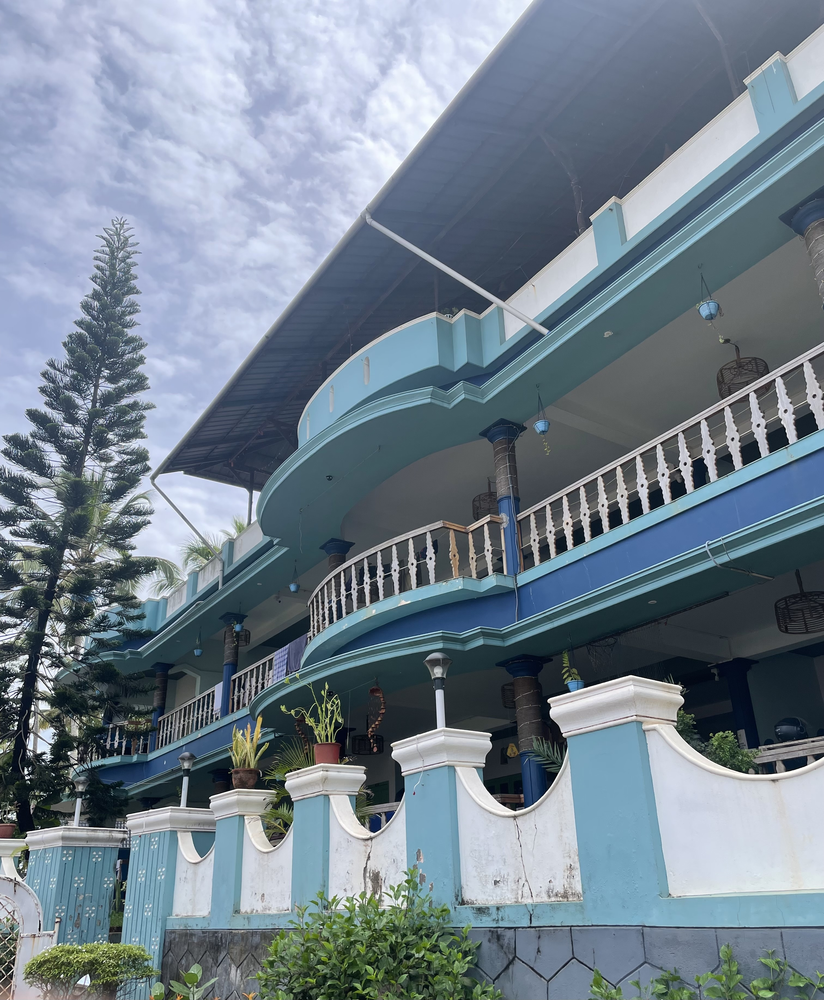

Alright, let me take you on a little journey to Varkala, Kerala. Landed at Trivandrum. Took the half hour cab to Zostel Varkala. All I could think about was checking into Zostel and diving into a new adventure. The moment I stepped out of the cab, though, my phone slipped right out of my pocket and hit the ground—only I had no clue it happened.
About ten minutes later, while filling in the hostel paperwork, I realized my phone was missing. I felt a rush of panic—what if it was gone forever? I dashed outside, hoping the cab might still be there, but it had already left. Suddenly, three strangers walked up, each with a friendly grin. One of them held out my phone. "Is this yours?" he asked.
I was completely amazed. Why would they go out of their way to help someone they didn't even know? In that moment, it struck me that travel isn't just about beaches or pretty views—it's about the people you meet and the kindness they show you. That simple act meant more to me than any scenic photo I could've taken.
